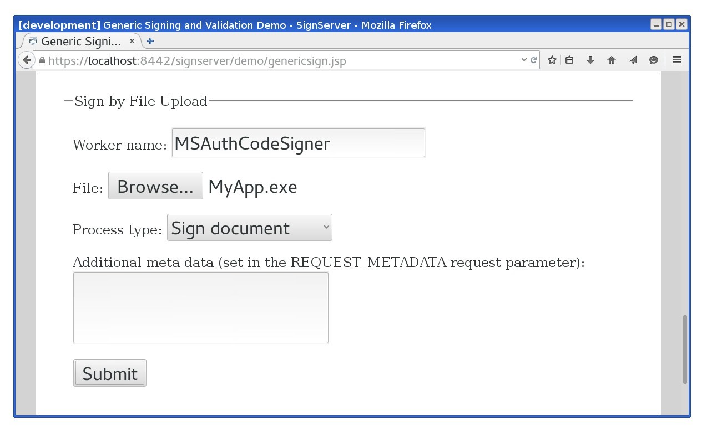
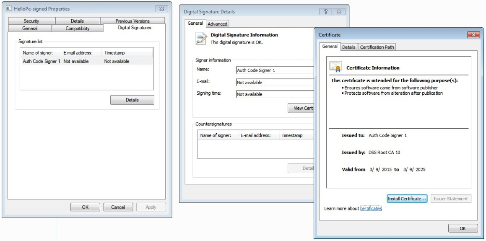
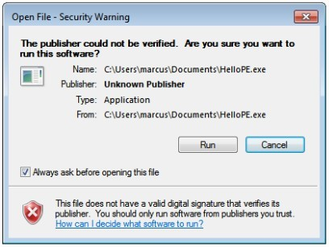
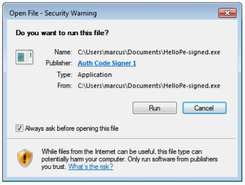

Code Signing with Authenticode Signatures
enterprise
Microsoft Authenticode is a digital signature format used to determine the origin and integrity of software binaries. Using Authenticode, the signature is embedded within Portable Executable (PE) files, (typically file types like .exe, .dll, .sys, .ocx, and so on), Windows Installer packages (.msi), Windows PowerShell scripts (.ps1, .psm1, and .psd1), Microsoft Catalog files (.cat), or Cabinet archives (.cab). For more information, refer to the Microsoft documentation on Windows Authenticode Portable Executable Signature Format.
The SignServer Authenticode signer is configured just like any other signer in SignServer and the only special requirement for this signer is to use a code signing certificate.
If your organization already has a Certificate Authority, such as Keyfactor EJBCA, configured to be trusted by your users, you can use that CA to issue the certificate. Otherwise, you could buy a certificate from one of the CAs already trusted by default in Windows.
For testing purposes, and also for test environments in general, you can issue the certificate yourself. Remember to have the extended key usage Code Signing set and to install the CA certificate in your test environment.
Adding an Authenticode Signer
The SignServer Authenticode signer is called MS Authenticode Signer.
To configure an MS Authenticode Signer, follow the steps below and use the template called ms_authcode_signer.properties:
Open the Admin Web.
Go to the Workers page and click Add a new worker.
On the Add Worker / Load Template page, choose the method From Template.
In the Load From Template list menu, select ms_authcode_signer.properties and click Next.
Click Apply and select the worker name MSAuthCodeSigner.
Click the Configuration tab and make the appropriate adjustments for:
NAME: Specify a name.
CRYPTOTOKEN: If using SignServer Enterprise, this should match the name of the crypto token configured in Set up a Crypto Worker. If you are on an Appliance, this crypto token was created for you with the name HSMCryptoToken10. If using SignServer Cloud, a CryptoTokenP12 is provided with the instance, containing all the sample keys and certificates you need, and you can continue to the last step and ensure that your signer is in an ACTIVE state.
Generate a new key-pair for the signer, by clicking the Status Summary tab and then Renew Key.
Select a key algorithm, such as RSA and a key specification such as 2048 and click Generate.
Create a Certificate Signing Request (CSR) for the new key-pair by clicking Generate CSR.
Select a signature algorithm like SHA256withRSA and specify a subject DN (name) for the new certificate such as CN=MS Auth Code Signer Test,O=My Company, C=SE, and click Generate.
Click Download and save the CSR file.
Bring the CSR file to your Certification Authority to get the certificate and the CA certificates in return.
 Before installing certificates in a production system, make sure to check the signers authorization since the signer will be fully functional and ready to receive requests once the certificates are installed.
Before installing certificates in a production system, make sure to check the signers authorization since the signer will be fully functional and ready to receive requests once the certificates are installed.Click Install certificates and browse for the certificate files. Start by providing the signer certificate and then follow with the issuing CA certificates in turn. Click Add to list the certificates in the chain.
When all certificates are added in the correct order, click Install.
Once the certificates are installed, the signer should be in state ACTIVE. If not, check the top of its Status Summary page for any errors.
Using MS Auth Code Signer
To submit the Portable Executable (PE) files or Windows Installer packages (.msi) to be signed, use one of the following available interfaces:
Web Form Upload: Upload file using the SignServer Client Web form in your web browser. See Web Form Upload.
Submit File Using SignClient: Use the SignServer SignClient. See Submit File Using SignClient.
Web Services: Integrate in a custom application using the SignServer Client Web Services (WS) interface. See Submit File Using Client Web.
Scripting Using cURL or wget: Use an HTTP client such as cURL or wget. See Scripting using cURL.
Submit File with Web Form
To use a web form for submitting files for signing, go to the SignServer Client Web and specify the worker name.
The following example displays uploading a Portable Executable (PE) file:

You can use any unsigned executable file.
Submit File Using SignClient
To submit a file for signing using the SignServer SignClient, send a request to the worker using the following command:
bin/signclient signdocument -workername MSAuthCodeSigner -infile MyApp1.exe -outfile MyApp1-signed.exewhere workername is the name of the worker in your SignServer server, infile the path to the unsigned input file to sign, and outfile the filename the signed version will be written to.
Submit File Using Client Web
To download an executable file and then submit and sign the EXE using the Client Web, do the following:
Go to the Client Web page at: https://<yourawsinstancepublicdns>/signserver/clientweb/.
Under File Upload, specify MSAuthCodeSigner as the Worker name.
Click Browse next to File, select your EXE file and click Submit.
You will be prompted to save the signed EXE file.
Scripting using cURL or wget
The following displays a cURL upload example. Replace http://localhost:8080/ with the address of your server or appliance:
cURL Upload Example
curl -F "workerName=MSAuthCodeSigner1" -F "file=@firmware.bin" \http://localhost:8080/signserver/process > firmware.sigVerifying an Authenticode Signed Binary
You can verify the signature by viewing the signature in File Properties, verifying the signature using MS SignTool, or running the application and check the security warning.
Inspect Digital Signature in File Properties
You can inspect the signature attached to the file in the Windows environment to verify that your file is now signed.
To view the signature details, do the following:
Right-click the file and select Properties.
Click the Digital Signatures tab.
Select the signature in the Signature list and click Details.

Verify Signature using Microsoft SignTool
The Microsoft SignTool command-line tool can be used to verify Authenticode signed binaries but requires the .NET Framework. For more information, refer to the Microsoft documentation on SignTool.exe (Sign Tool).
SignTool is available as part of the Windows SDK. The tool is installed in the \Bin folder of the Microsoft Windows Software Development Kit (SDK) installation path.
After installing the Windows SDK, open a command prompt, change to the Bin directory within the SDK folder and execute the following command (as User) with the path to the signed file:
SignTool Verification Example
cd C:\Program Files\Microsoft SDKs\Windows\v7.1\Binsigntool.exe verify /pa /v MyApp1-signed.exe Replace MyApp1-signed.exe with the filename of the signed file. The /pa option specifies that the Default Authentication Verification Policy is used and /v provides verbose output.
Run Application to Check Warning
In Windows, when an executable file has been downloaded and is about to be run, a security warning appears. At this moment the embedded signature has been verified, the code signing certificate has been verified as issued by a trusted CA, and the name of the publisher is displayed to the user. The Security Warning displayed asks the user to confirm the start of the application created by that publisher.
The following displays an example if running an unsigned executable:

The following displays an example if running a signed executable:

MS Authenticode Signer Options
The following lists relevant properties to configure for the MS Authenticode Signer:
Worker Property | Description |
|---|---|
SIGNATUREALGORITHM | Specifying the algorithm used to sign data. |
DIGESTALGORITHM | Algorithm for the digest of the binary. |
PROGRAM_NAME | Optional program name to embed in the signature. |
PROGRAM_URL | Optional program URL to embed in the signature. |
TSA_WORKER | Worker ID or name of internal (Authenticode) timestamp signer in the same SignServer if time-stamping should be used and with a time-stamp signer in SignServer. |
TSA_URL | URL of external (Authenticode) timestamp authority if time-stamping should be used and with an external TSA. |
For all available properties, refer to MS Authenticode Signer.